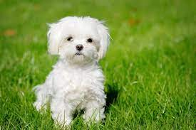
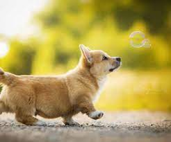
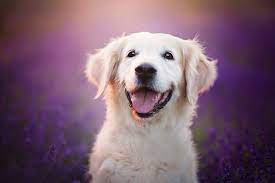
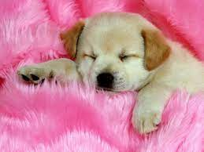
Aici sunt cateva poze cu caini , pe care le puteti downloada prin click dreapta pe poza
si apoi selectati "Save as" , dupa care v-a incepe descarcarea acestora mai apoi dvs sa le puteti
folosi.
Cateva Citate Despre Caini:
Vei găsi întotdeauna speranță în ochii unui cățel.
Câinii cer atât de puțin, dar merită atât de mult!
Toți cred că au cel mai bun căine. Și nu se înșeală.
Fiecare câine merită o casă, dar nu fiecare casă merită un câine.
 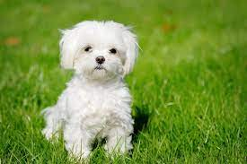
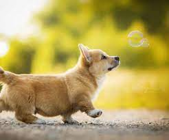
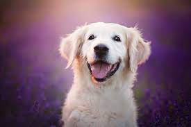
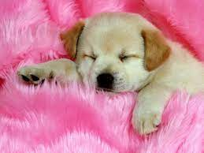
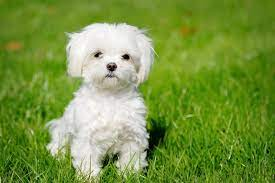
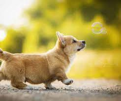
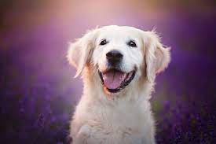
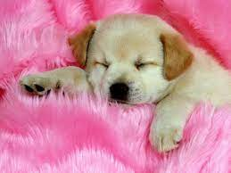